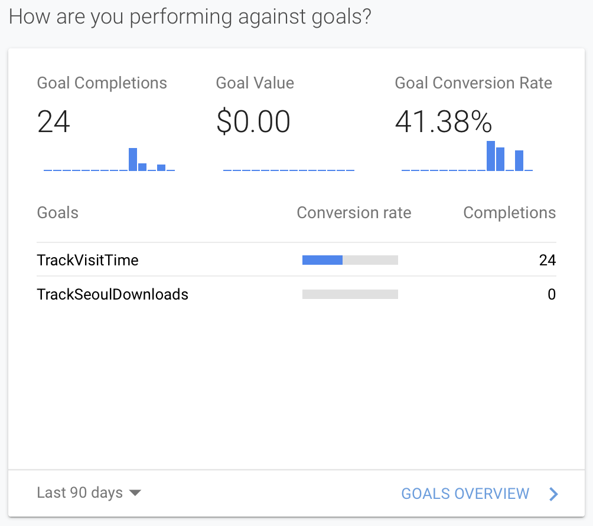

Na de intro van vorige week hadden we het deze week over Google Analytics, een krachtige tool om het 'verkeer' op je website te analiseren.
Hierdoor kan bijvoorbeeld nagegaan worden hoe bezoekers op je website terrecht komen, via mail, andere site, ect.
Er zijn uiteraard nog veel meer mogelijkheden, als bedrijf zet je dus best een aantal goals die je wil behalen.
Onze doelen:
- 30 bezoekers bezoeken de website
- De bezoekers blijven gemiddeld 3 min op de website
- 10 bezoekers downloaden de gratis kaart van Seoel
We zijn gestart vanuit een bestaand Google Analytics account, waarna we de tracking code toegevoegd hebben aan onze website.
Vervolgens was het even wachten tot de connectie geslaagd was en de data binnen kwam. Nadien hebben we onze "goals" toegevoegd.
Op bovenstaande afbeelding zien we het aantal bezoekers van de laatste 90 dagen, dit waren er 20 in de laatse 90 dagen.
Een volgende doelstelling was om de gebruikers minstens 3 minuten op de website wast te houden, dit zou willen zeggen dat onze blogs gelezen worden.
Op onderstaande afbeelding zien we dat in de laatse 90 dagen 24 gebruikers 3 minuten of lager op de website vertoeft hebben.

Op onderstaande afbeelding is te zien hoe het aantal downloads van de "Seoel kaart" ingesteld is op Google Analytics, het is een click event waarna een increment van
1 bijgehouden wordt door Google Analytics. Wanneer deze kaart 10 keer gedownload is zal het increment 10 keer getriggerd zijn.


{kind=link}